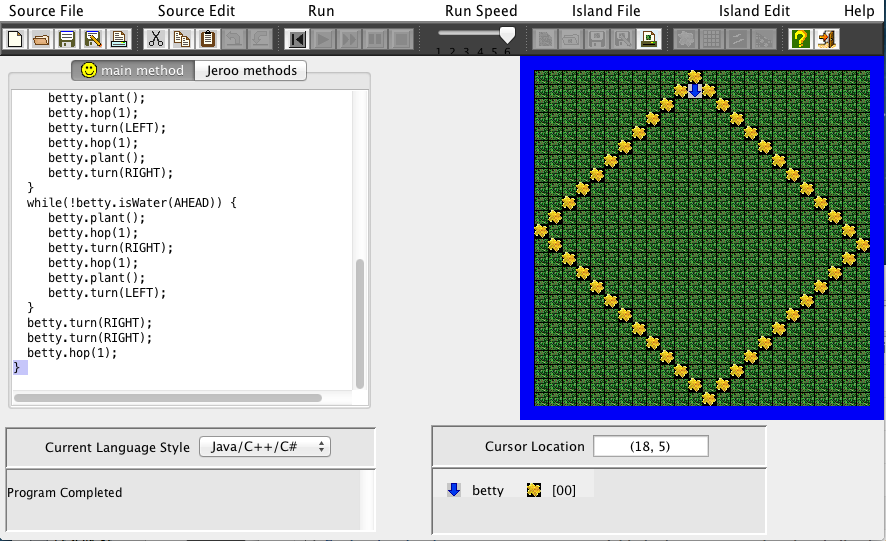

Jeroo unit 1:
This unit was filled with crazy puzzles from instantiation to moving and turning the Jeroo. I figured out Jeroo syntax and was able to create cool tricks using while loops. Most of the labs in this unit would have to be hardcoded but I tried to take another route and used loops and conditionals.
Jeroo unit 2:
This was the most difficult unit for me. Most of this unit had to be hardcoded due to the complexity of the labs. I used methods though to make some of the hardcoding easier. After using some methods on the labs I found how to use the directions correct. Overall this was a difficult unit but some of my most quality work has been produced in this unit.
Jeroo unit 3:
This was my favorite unit. In this unit we had to solve lots of mazes using recursive properties and loops. This unit was not very difficult for me because I understand the concepts of loops. I was happy to use a nested while loop in this also I used some nested if else statements. I need to make sure to only have > 4 conditionals in each if statement.
Jeroo unit 4:
This was hands down the most intresting unit. We used unique technics to solve unique puzzles that were very puzzling. This was probably the second hardest unit to apply thought process and logic for the ultimate outcome .